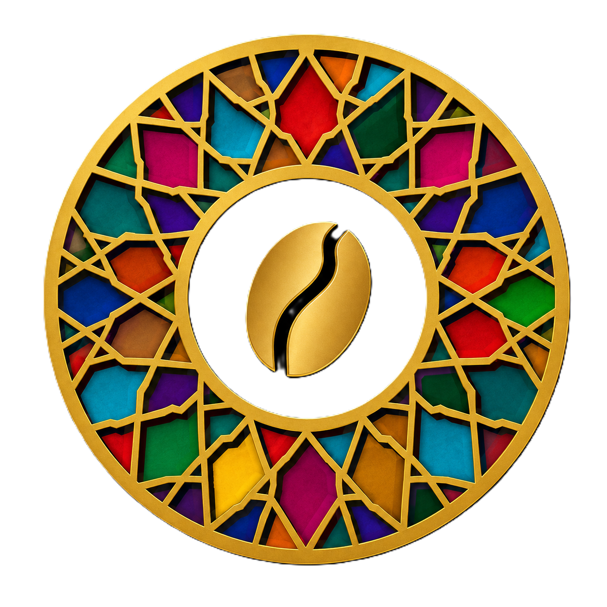
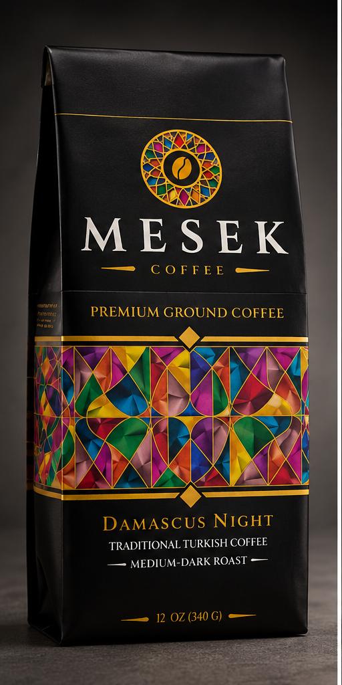
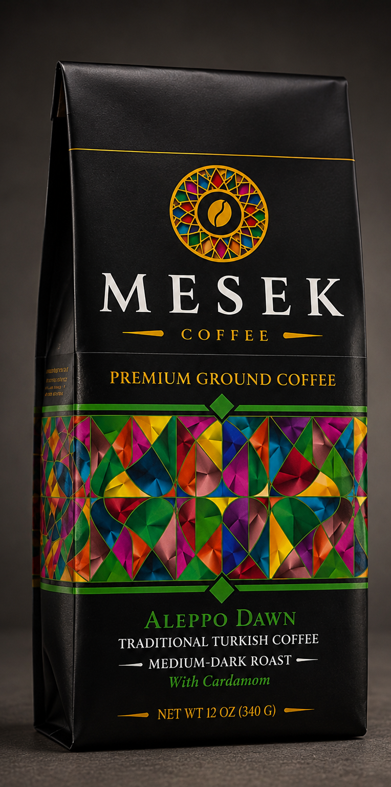
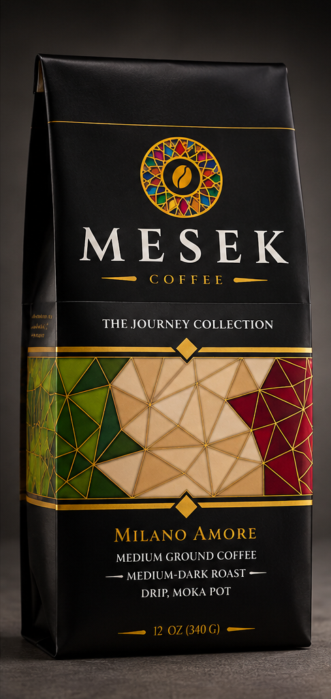
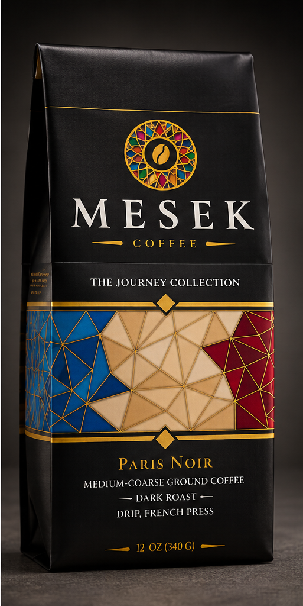
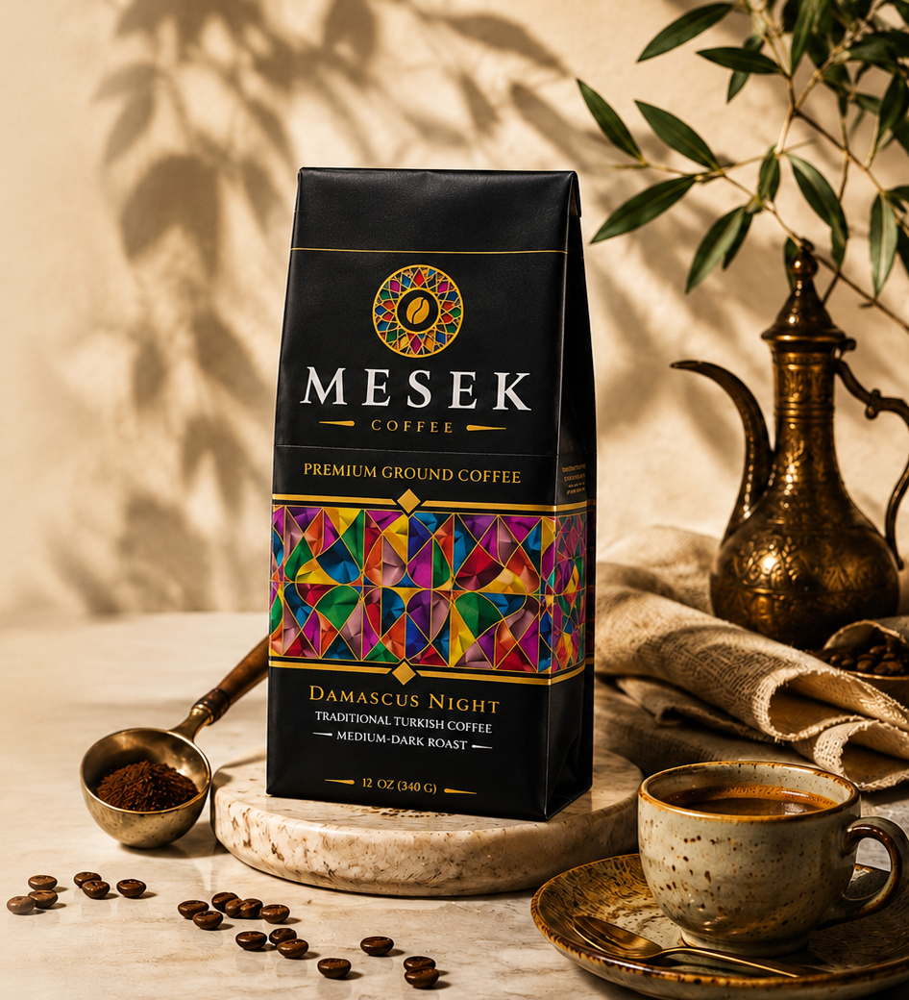

Damascus Night
Traditional Turkish coffee with a rich, aromatic character and a medium-dark roast.
Fine ground • Turkish preparation

Tradition in every cup. Mesek Coffee brings together distinctive coffee traditions, rich aromas and carefully crafted roasts designed for different ways of brewing.
Explore Our Coffee Our Story
Three distinct coffees inspired by different traditions, each crafted for its own brewing experience.
Traditional Turkish coffee with a rich, aromatic character and a medium-dark roast.
Fine ground • Turkish preparation

Traditional Turkish coffee with cardamom, aromatic and warmly spiced.
Fine ground • Turkish preparation

Smooth and balanced medium-dark coffee designed for an inviting everyday cup.
Medium fine ground • Drip & Moka Pot

A deeper dark roast with a bold, full-bodied profile made for slower brewing.
Medium-coarse ground • Drip & French Press
Mesek Coffee was created around a simple idea: every cup of coffee can tell the story of a place.
Across cultures and generations, coffee has been prepared in remarkably different ways. From the rich, aromatic traditions of Turkish coffee to the cafés of Italy and France, each style carries its own character, ritual, and history.
Mesek brings those traditions together in one collection. Each coffee is thoughtfully crafted with its own roast, grind, and brewing style, creating a different experience inspired by the places and traditions behind it.
Our Journey Collection begins with Damascus Night, Milano Amore, and Paris Noir, three distinctive coffees with three different personalities, connected by one idea: discovering the world through coffee.
For us, coffee is more than what is in the cup. It is the aroma, the preparation, the people, the place, and the memories that travel with it.
One journey. Many traditions. Coffee worth remembering.
Discover the Collection